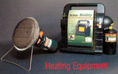
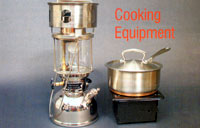
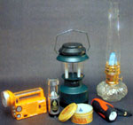

Heating
lf you live where winters are cold, having some kind of backup heating option is probably the single most important item in your emergency kit. If you lose electric power during a blizzard or ice storm, you probably will lose your heat. And without heat, you won't be able to stay at home very long, even if you have plenty of food and water on hand. Plus, if your pipes freeze and burst, you will have an expensive repair bill to pay, too.
A woodstove certainly can keep you comfy, if you have plenty of firewood on hand. Some furnaces that burn coal or wood will function at reduced levels, even without electricity to power the circulating blower and thermostat. If you have a furnace that won't work without electricity, you can install a backup generator (and keep plenty of fresh fuel on hand) to provide power to your existing central heating system as well as to other appliances (see "Choosing a Backup Generator," Page 38).
If you don't have a generator, your least expensive option may be to heat just a room or two, and there are several ways to do this. Vented natural gas- or propane-fueled stoves, heaters and fireplaces as well as some kerosene heaters are all good choices. These heating appliances need to be connected to an appropriate chimney in accordance with the manufacturer's instructions and relevant fire codes. Because they are installed and vented permanently, these heaters are relatively safe. Be sure you have plenty of fuel on hand-if the power is out because of a blizzard or hurricane, you may not be able to get to the store. Even if you could, stores quickly run out of fuel during emergencies.
VENT-FREE
"Vent-free" gas heaters don't need a chimney or vent to operate. These heaters come in a wide variety of sizes and styles, are relatively inexpensive ($100 to $1,200) and, depending on their design, can be placed on a floor or mounted on a wall. Vent-free appliances, which do not exceed 40,000 British thermal units (Btu) per hour output, include certain types of space heaters, stoves, fireplace inserts and gas fireplaces (vent-free heaters should not be confused with portable propane heaters, which are discussed later).
Vent-free appliances are intended to supplement a primary source of heat, such as a furnace. These heaters are installed in a fixed location and connected to a natural gas line or an outside propane tank; a 100-pound tank that costs about $75 is the minimum recommended size. Virtually all of these units will work without electricity, making them a suitable choice for emergency heating.
One disadvantage of vent-free heaters is that they discharge the products of combustion - poisonous carbon monoxide (CO), nitrogen dioxide (N0 2 ) and carbon dioxide (C0 2 ) directly into the room while simultaneously consuming oxygen. Tests conducted in 1996 by the American Gas Association indicated the levels of these byproducts are within nationally recognized safety parameters; nevertheless, persons with respiratory ailments may be sensitive to these discharges.
All vent-free heaters manufactured within the last 20 years come equipped with an oxygen sensor that detects reduced levels of oxygen where the heater is operating and shuts it off before a dangerous concentration of carbon monoxide accumulates. Always operate any heater according to the manufacturer's instructions, and to be doubly safe, you also should install a battery-powered CO alarm for your home (about $40).
The Vent-Free Gas Products Alliance reports vent-free heaters are safe when used as directed. Nevertheless, the sale of vent-free heaters has been banned or restricted for many years in a number of states, cities and municipalities due to lingering safety concerns. The number of states that limit these heaters has decreased over time as safety features have improved; check your local codes before you buy a vent-free heater.
PORTABLE SPACE HEATERS
A portable gas or kerosene heater is another emergency heating option. Some units are designed for indoor or outdoor use, while others, including many camping stoves, are for outdoor use only. Be careful. The information on the product's packaging may be confusing or incomplete. Always read and follow the manufacturer's instruction manual. Because they are unvented and not permanently installed, these portable heaters are potentially more hazardous than options listed earlier.
Portable propane gas heaters are inexpensive, easy to operate and can keep you warm in an emergency. A small, 3,000 Btu catalytic (flameless) heater such as the Coleman BlackCat, designed for indoor use with proper ventilation, costs about $54 and will run for approximately eight hours on a 1-pound gas cylinder.
Another option is Mr. Heater's Portable Buddy (about $70). This indoor/outdoor unit, with an oxygen depletion sensor safety feature, can be connected to a 20-pound cylinder, such as those used with gas grills, and will run for about 100 hours and generate up to 9,000 Btu. (The 20-pound cylinder must be left outside the home.)
Unvented portable kerosene heaters (about $140 to $225) also are popular for emergencies because they emit a lot of heat for their size and can be moved from room to room. On the down side, they have been banned in some areas because of safety concerns, so check local codes before you buy one. Also, these heaters have to be refueled regularly, and you'll need a safe place to store several gallons of fresh fuel. Before refueling, a portable kerosene heater must be cooled completely, and you should take it outside before you add fresh kerosene. Be sure any heater you buy is designed to shut off automatically if it is jarred or tipped over.
Like their larger, vent-free cousins, portable propane and kerosene heaters emit the products of combustion into your living space while also consuming oxygen, so provide some fresh air while these heaters are in use. Be aware of the symptoms of CO poisoning: flu-like nausea, dizziness, weakness and headache. If anyone experiences these symptoms when a heater is in use, immediately turn off the heater and open windows.
Always place portable heaters on a level, hard, nonflammable surface-not on carpets or rugs. Keep them away from children and pets as well as drapes and other flammable items. And don't forget the No. 1 rule of home fire prevention: Keep a fire extinguisher in a convenient location and be sure all family members know how to use it.
- Greg Pahl
Cooking
With a wood- or gas-powered cookstove, you'll still be able to cook when the grid goes down. But if you have an electric stove, it requires so much power that many backup generators won't be able to run it. In this case, you'll probably want to include a portable stove in your emergency kit. You could get by on peanut butter and other cold foods for a day or so, but it won't take long before mere snacks will fail to satisfy and you'll want to cook, especially if your furnace is off in the wintertime.
Numerous portable cookstoves are available for outdoor use, but most of them are not safe for indoor use. Just as with portable space heaters, always check the instructions before you use any stove indoors.
The $100 BriteLyt lantern with cooking attachment (shown together on Page 34) is a good option for emergency indoor cooking if you use clean-burning isopropyl (rubbing) alcohol as fuel. A low-cost option is the $7 Flat-Fold Stove (see Page 34). You can place canned fuel or the NUWICK triple-wick candle (see Page 36) in this stove and boil water or heat a pot of canned stew.
Resist any notion to move your charcoal or gas-fired grill indoors. They are not safe for indoor use because of fire and carbon monoxide hazards, but you can use them away from flammable structures. This certainly won't be ideal during cold weather, but if you bundle up, grilling in the cold may be worth it for a hot meal.
- Barbara Pleasant
Lighting
If you plan to rely on flashlights or electric lanterns for emergency lighting, be sure to keep plenty of fresh batteries on hand. Or you can avoid the expense and trouble of replacing batteries if you use a flashlight that can be recharged by cranking or shaking. Of all the products we reviewed for this sto ry, our favorites were the sturdy Coleman Sentinel flashlight and the Crank'n'Go Solar/Dynamo Radio/Flashlight (both shown on Page 36). You can recharge the Coleman Sentinel in any household outlet, or when the power is out, just crank the handle. Coleman also makes a battery-powered lantern that can be recharged by plugging it into your car battery (or any household outlet). The Crank'n'Go Solar/Dynamo is a flashlight, radio and emergency-flasher. To recharge, crank it or set it in the sunlight.
Kerosene lamps are a traditional nonelectric light source, and Aladdin mantle lamps will provide more light than simple wick-type lanterns. If you like durable, high-quality products, consider the versatile BriteLyt. This nickel-plated, solid-brass mantel lantern operates on a variety of fuels, including kerosene. diesel or biodiesel, lamp oil, alcohol or even charcoal starter fluid. It also can be fitted with a flat burner top to serve as a cookstove. This lantern/stove burns cleanly enough when fueled with isopropyl alcohol to be safe for indoor use. With 1 quart of fuel, the BriteLyt will produce as much light as 500 candles plus 8,000 Btu of heat, for eight to 10 hours.
Candles are an inexpensive and easy-to-store lighting option, but to be safe, use them with glass chimneys. And for your emergency kit, you may want to choose longer-lasting products such as the NUWICK 120-hour candle.
- Cheryl Long
Emergency Lighting Equipment
Keep your emergency lighting equipment in good working order, ready and waiting should you need to use it. The photo below shows several useful options. From left:
The Crank'n'Go Solar/Dynamo Radio/Flashlight ($27) features a flashlight, radio and emergency flasher. Crank it or set it in the sunlight to recharge. Available from (877) 927-3368 or www.crankngo.com .
The UCO Candle Lantern (about $30) is compact, lightweight and windproof, and is available with an optional mini-flashlight. Each candle burns for nine hours and the mini-flashlight will last for 40 hours. Available from (888) 297-6062 or www.ucocorp.com .
The Coleman Rechargeable Lantern (about $35) uses two 4-watt fluorescent tubes and its battery can be recharged from 110V or 12V (car) sources. Widely available at camping supply stores.
The NUWICK 120-Hour Candle ($10) burns up to three wicks simultaneously. Available from (818) 980-3314 or www.nuwick.com and other online retailers.
The Coleman Sentinel Crank Flashlight ($40) can be recharged by plugging it into any 110V outlet. Or just crank it for 30 seconds to get five to eight minutes of light. Available from (800) 835-3278 or www.coleman.com .
Aladdin Mantle Lamps use kerosene and emit 60 candlepower of light without smoke or odor. There are numerous styles, starting at about $75. Available from (800) 457-5267 or www.aladdinlamps.com .
Mother Earth News
|
 Matthew Stallbaumer Coleman's BlackCat Portable Catalytic Heater (about $55) provices 3,000 Btu for eight hours using a 1-pound propane canister. Available from (800)835-3278 or www.coleman.com . Right: Mr. Heater's Portable Buddy Propane Heater (about $70) heats up the 200 square feet, with 4,000 Btu and 9,000 Btu settings. It is approved for indoor use and has an automatic low-oxygen shut-off system. To find a local retailer, call (800) 251-0001 or go to www.mrheater.com . |
 Matthew Stallbaumer Left: Petromax BriteLyt lantern . This sturdy lantern ($100) works as a stove with the optional burner attachment and is safe for indoor use when used with isopropyl alcohol for fuel. Available from (727) 856-9245 or www.britelyt.com . Right: Coghlan's Flat-Fold Stove (pan not included). Unfolds to a compact 7-by-7-inch-by-4-inch metal stand ($7) and uses canned candles or canned sterno-type fuel. Available from (800) 999-1863 or www.emergencyessentials.com . |
 Matthew Stallbaumer |